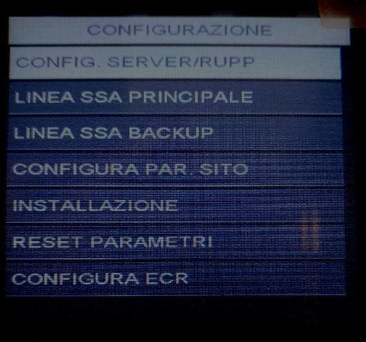
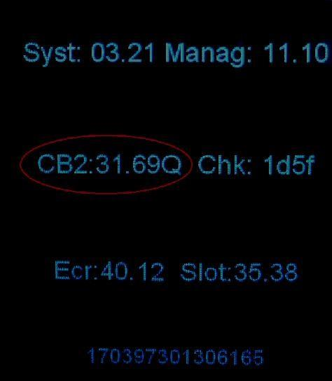

Manuale Installatore Ingenico Move
Rev.
1.02
Data: 17/12/2025
2500
Manuale Installatore
Ingenico Move/2500

Manuale Installatore Ingenico Move
Rev.
1.02
Data: 17/12/2025
2500
Indice generale
1. Scopo e campo di applicazione .......................................................................................... 2
2. Accensione e Riavvio ........................................................................................................ 3
2.1. Accensione ........................................................................................................................... 3
2.2. Riavvio ................................................................................................................................. 3
3. Attivazione bancaria .......................................................................................................... 3
3.1. Parte Pos: configurazione SSA manager................................................................................... 3
3.2. Attivazione manuale .............................................................................................................. 5
4. Reset Pos ......................................................................................................................... 5
4.1. Reset totale .......................................................................................................................... 5
4.2. Reset bancario ...................................................................................................................... 6
5. Release CB2 e Release Applicazioni .................................................................................... 7
- Configurazione SIGNA ................................................................................................................. 8
- Scopo e campo di applicazione
Questo documento descrive le modalità di utilizzo e configurazione del pos Move2500.

Manuale Installatore Ingenico Move
Rev.
1.02
Data: 17/12/2025
2500
2. Accensione e Riavvio
2.1 Accensione
Accensione : collegare l'alimentatore del pos. Il pos si troverà nella schermata di idle dopo circa 90
secondi.
2.2 Riavvio
Riavvio: premere contemporaneamente il tasto giallo e il tasto punto.
3. Attivazione bancaria.
3.1. Parte Pos: configurazione SSA manager

Per accedere al menù SSA manager e procedere con la configurazione
per l’attivazione:
- premere tasto Grigio (sopra il tasto rosso)
- selezionare SSA MANAGER
- selezionare CONFIGURAZIONE – psw 2010.
Nel menù configurazione si trovano 7 voci, queste
verranno descritte dettagliatamente nei punti 3-11
dell’elenco sottostante;
4. selezionare Config server rupp:
• Slot → selezionare lo slot interessato: Argentea;
• Merchant server: ARG-!-NTSV.AMON Premere tasto verde per confermare;
- RUPP: inserire il rupp assegnato, per la lettera iniziale utilizzare la tastiera visualizzata a
- video, per i valori numerici utilizzare la tastiera numerica del pos. Premere tasto verde per
- continuare.
- Quando il pos ritorna in slot, premere tasto rosso, dopo di che, verrà richiesto se si
- desidera salvare le modifiche, premere tasto verde per confermare.
5. Selezionare SSA Principale:
Manuale Installatore Ingenico Move
Rev.
1.02
Data: 17/12/2025
2500
- selezionare Tipo Linea: scegliere GPRS e confermare con tasto verde;
- selezionare Tipo Protocollo: scegliere tra TCP/IP. Confermare con tasto verde;
- inserire indirizzo IP: 208.224.253.5 i valori vanno inseriti dal tastierino del pos.
- Confermare con tasto verde;
- inserire Porta SSA: i valori vanno inseriti dal tastierino del pos. Confermare con tasto verde;
- Timeout socket: Confermare con tasto verde;
- Timeout Ricezione: Confermare con tasto verde;
- il pos ritornerà in tipo linea, premere tasto rosso, dopo di che verrà richiesto se si vogliono
- salvare le modifiche. Confermare con tasto verde.
6. selezionare SSA backup:
- selezionare Tipo Linea: scegliere GPRS. Confermare con tasto verde;
- selezionare Tipo Protocollo: scegliere tra TCP/IP. Confermare con tasto verde;
- inserire indirizzo IP: 208.224.253.5 i valori vanno inseriti dal tastierino del pos.
- Confermare con tasto verde;
- inserire Porta SSA. Confermare con tasto verde;
- inserire Timeout socket: Confermare con tasto verde;
- inserire Timeout Ricezione: Confermare con tasto verde;
- il pos ritornerà in tipo linea, premere tasto rosso, dopo di che verrà richiesto se si vogliono
- salvare le modifiche. Confermare con tasto verde.
7. selezionare config. Par sito
• inserire APN: m2m.tns.prod1
• verrà mostrato a display IP DINAMICO con scelte SI’ o NO.
Selezionare SI e confermare con tasto verde, premete poi tasto rosso

Manuale Installatore Ingenico Move
Rev.
1.02
Data: 17/12/2025
2500
8. una volta completata la configurazione di config. Par sito viene richiesto automaticamente se si vuole
eseguire l’attivazione. Premere tasto verde per confermare l’attivazione bancaria. Durante questa
procedura vengono scaricati sul pos il/i termid prediposti ad essere caricati sul pos. Tasto rosso se si
vuole annullare l’operazione.
3.2. Attivazione manuale
Per far partire il primo DLL:
1. premere Tasto Grigio
2. selezionare SSA MANAGER – CONFIGURAZIONE (2010)
3. selezionare INSTALLAZIONE e confermare con tasto verde (premere le frecce in basso a
destra sul pos per scorrere le varie opzioni della tabella)
4. Reset Pos
4.1. Reset totale
Sul pos move/2500 è possibile resettare i termid e i parametri di configurazione dell’ssa oppure
solamente i termid.
Per resettare completamente il pos:

Manuale Installatore Ingenico Move
Rev.
1.02
Data: 17/12/2025
2500
- premere TASTO GRIGIO
- selezionare SSA MANAGER – CONFIGURAZIONE (2010)
- selezionare RESET PARAMETRI
• a display verrà richiesto di eseguire il reset completo: se si seleziona OK-tasto verde verrà
eseguita una cancellazione completa, cioè verranno eliminati sia i termid presenti
a bordo sul pos che i parametri di configurazione dell’ssa manager.
Per riconfigurare e attivare il pos vedere capitolo 3.
4.2. Reset bancario
Per resettare solamente i termid e non i parametri di configurazione:
- premere TASTO GRIGIO
- selezionare SSA MANAGER – CONFIGURAZIONE (2010)
- selezionare RESET PARAMETRI
Se alla richiesta di cancellazione parametri completa si preme tasto rosso il pos chiederà di
eseguire la cancellazione bancaria. A questo punto premendo tasto verde viene eseguita un
reset parziale e cioè verranno eliminati solamente i termid presenti sul pos, mentre
verranno lasciati invariati i parametri di configurazione.

Manuale Installatore Ingenico Move
Rev.
1.02
Data: 17/12/2025
2500
Per rifare l'attivazione vedere i paragrafi 3.3 e 3.4.
5. Release CB2

Per visualizzare la release CB2:
- premere tasto F1;
- selezionare SERVIZIO;
- selezionare RELEASE SW: la seconda linea mostra la
- release CB2 che è caricata a bordo del pos.
6. Configurazione SIGNA

Manuale Installatore Ingenico Move
Rev.
1.02
Data: 17/12/2025
2500
Il pos Move/5000 permette di apporre la firma del pagamento direttamente a display del pos. La firma va
poi inviata al server SIGNA, per questo, una volta eseguita l’attivazione, va configurato il menù SIGNA.
Per accedere al menù SIGNA e procedere con la configurazione:
1. premere tasto Grigio (sopra il tasto rosso)
2. selezionare SIGNA - psw 7446;
3. per la configurazione:
selezionare MENU SIGNA
selezionare PARAM.LINEA TML - psw 7454
selezionare PARAMETRI LINEA 1; i parametri di configurazione sono
tipo linea: selezionare GPRS e premere tasto verde;tipo protocollo: selezionare TCP/IP + SSL
e premere tasto verde;
ID. CERT.SSL3 : digitare 28 e premere tasto verde
NUM TELEFONICO/ IP: digitare IP SSA principale 208.224.253.5 e premere tasto verde;
WEB SERVICE: inserire /idrm_argentea/wsincoming/wsincoming.aspx e premere tasto verde;
PORTA: digitare 7636 e premere tasto verde;
apn gprs: digitare m2m.tns.prod1
username lasciare vuoti
pw lasciare vuoti
ritorna in tipo linea, premere tasto rosso e confermare con tasto verde le modifiche.
A questo punto signa è configurato ed le firme vengono inviate in maniera corretta.